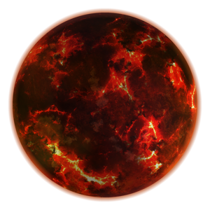

Mustafar
Mustafar est une planète de lave de l’univers de fiction Star Wars. Située dans la Bordure extérieure, cette petite planète orbite autour de l'étoile Priate. Elle est notamment célèbre pour être le lieu du premier affrontement entre Anakin Skywalker, devenu Sith sous le nom de Dark Vador, et son ancien maître Jedi Obi-Wan Kenobi. Malgré son hostilité naturelle, elle est habitée par les Mustafariens et très prisée pour ses ressources minières par la Confédération des systèmes indépendants durant la guerre des clones, puis par l'Empire galactique. L'influence du côté obscur de la Force étant forte sur cette planète, Dark Vador y fait construire son château durant la période de domination de l'Empire.

| Apparaît dans : | La Revanche des Siths |
|---|---|
| Environnement : | Planète de lave |